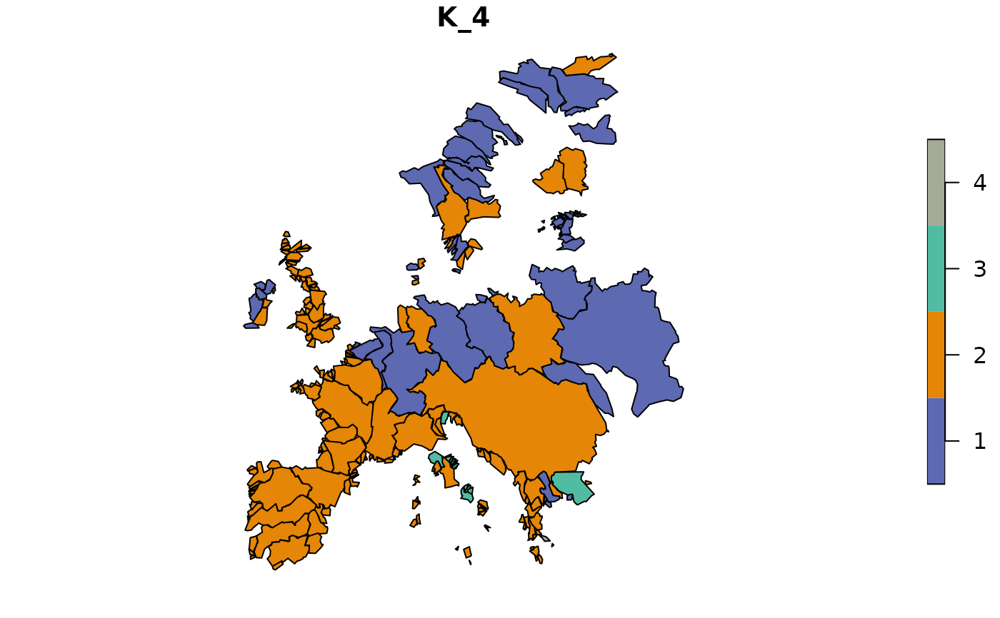
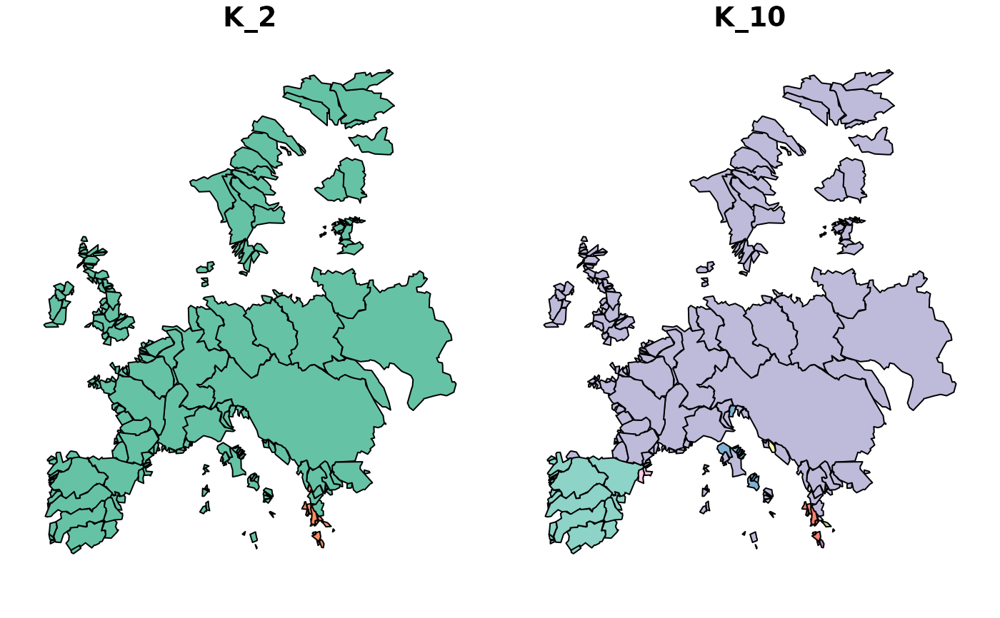

This plot function can be used to visualize bioregions based on a
bioregion.clusters object combined with a geometry (sf objects).
Usage
map_bioregions(
clusters,
geometry,
bioregionalization = NULL,
write_clusters = FALSE,
plot = TRUE,
...
)Arguments
- clusters
An object of class
bioregion.clustersor adata.frame. If adata.frameis used, the first column should represent the sites' ID, and the subsequent column(s) should represent the clusters.- geometry
A spatial object that can be handled by the
sfpackage. The first attribute should correspond to the sites' ID (see Details).- bioregionalization
An
integer,character, orNULLspecifying which bioregionalization(s) to plot. IfNULL(default), all bioregionalizations are plotted. If anintegeror vector ofintegers, bioregionalization(s) are selected by column number(s) in theclustersdata.frame (starting from 1 after the ID column). If acharacteror vector ofcharacters, bioregionalization(s) are selected by name(s) matching column names inclusters.- write_clusters
A
booleanindicating if theclustersshould be added to thegeometry.- plot
A
booleanindicating if the plot should be drawn.- ...
Further arguments to be passed to
sf::plot().
Value
One or several maps of bioregions if plot = TRUE and the
geometry with additional clusters' attributes if write_clusters = TRUE.
Details
The clusters and geometry site IDs should correspond. They should
have the same type (i.e., character if clusters is a
bioregion.clusters object) and the sites of clusters should be
included in the sites of geometry.
Bipartite networks: If the clusters object is from a bipartite network
(containing both sites and species), only site nodes will be mapped. The
function automatically filters to site nodes using the node_type attribute.
Colors: If the clusters object contains colors (added via
bioregion_colors()), these colors will be automatically used for plotting.
Otherwise, the default sf color scheme will be applied.
Author
Maxime Lenormand (maxime.lenormand@inrae.fr)
Boris Leroy (leroy.boris@gmail.com)
Pierre Denelle (pierre.denelle@gmail.com)
Examples
data(fishmat)
data(fishdf) # (data.frame version of fishmat)
data(fishsf)
net <- similarity(fishmat, metric = "Simpson")
clu <- netclu_greedy(net)
map <- map_bioregions(clu, fishsf, write_clusters = TRUE, plot = FALSE)
# With colors
clu_colored <- bioregion_colors(clu)
map_bioregions(clu_colored, fishsf, plot = TRUE)

# With bipartite network (sites and species)
clu_bip <- netclu_greedy(fishdf, bipartite = TRUE)
clu_bip_colored <- bioregion_colors(clu_bip)
map_bioregions(clu_bip_colored, fishsf, plot = TRUE)
# With multiple bioregionalizations, plot only specific ones
dissim <- dissimilarity(fishmat, metric = "Simpson")
clu_multi <- hclu_hierarclust(dissim,
optimal_tree_method = "best",
n_clust = c(2, 4, 10))
#> Randomizing the dissimilarity matrix with 100 trials
#> -- range of cophenetic correlation coefficients among trials: 0.8263 - 0.8586
#>
#> Final tree has a 0.8586 cophenetic correlation coefficient with the initial dissimilarity matrix
#> Determining the cut height to reach 2 groups...
#> --> 0.9921875
#> Determining the cut height to reach 4 groups...
#> --> 0.96875
#> Determining the cut height to reach 10 groups...
#> --> 0.765625
map_bioregions(clu_multi, fishsf, bioregionalization = c(1, 3),
plot = TRUE) # By index

map_bioregions(clu_multi, fishsf, bioregionalization = c("K_2", "K_4"),
plot = TRUE) # By name